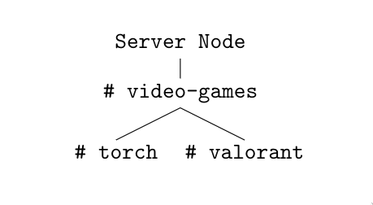
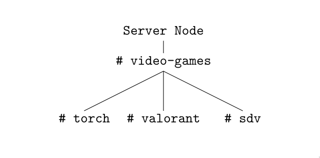
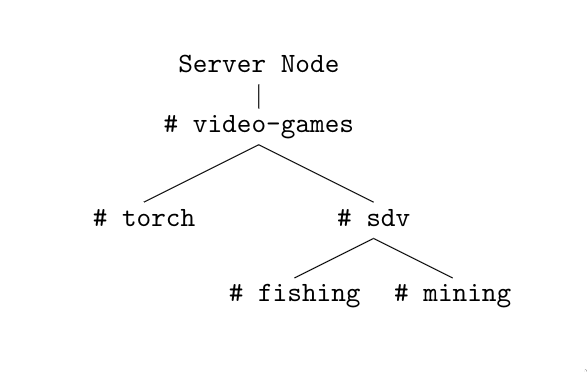

An Elegant Generalisation of Modern Messaging Applications
A solution to the status quo of endless Slack copycats.Introduction

I think I'm intimately familiar with the Slack interface, but I've only really used it once or twice in my entire life. Where I gained this intimacy, was from the hours I've wasted on Discord talking to people and scrolling endlessly through missed chatlogs. Inspired by the IRC chatrooms of days yonder, Slack has more-or-less defined the modern generation of identical messaging applications1. The notion of an immutable set of channels, each assigned to some vague topic like “general”, “music”, or even worse, “memes”, is now the standard across messengers like Discord and Micro$oft Teams and a thousand more copycats. Though each application adds their own trivial little spins on it and sell themselves on it, they all fundamentally run on the same core architecture: Servers, are made of categories, are made of channels, are made of messages. That's it2.
1 Even preserving the convention of prefixing channels with a #.
2 And private messages and group chats, which are discussed later.
Conversations as Trees
This design is little more than a more real-time and instantaneous equivalent to email. Actually, it's worse, because emails are not forced to conform to the arbitrary dictation of “allowed topics”, which take the form of channels in Slack-likes1. In this claustraphobic design, concurrent conversation threads are mangled and twisted, as it becomes impossible to discern who is responding to who. Worse, threads may split, turning the channel into a Gordion Knot. Possibly important messages are drowned out by a later conversation. Linear channels are unmanageable and cumbersome once the number of participants in a conversation is more than three. My solution is a radical new approach to the messenger architecture. One where the “channels” can be dynamically created by users2 and directly reflect the topic of conversation. This is achieved by not storing a list of channels, but rather storing them as a tree3. This does not change the fact that channels are lists of messages, just how channels are organised. Starting a conversation is simply the addition of a child node to perhaps a “server node”. If that conversation splits, another child node is created, and users may select entire subtrees of channels or conversations to listen to or to ignore.
What do I mean? Imagine this: You have an interface very similar to Slack, with the leftmost being servers. Clicking on one, you find a #video-games channel node which currently has two child nodes, one named #torch and another named #valorant. Important Note: #video-games is not a channel “folder”; it's its own channel and it's still possible to send messages within it. This will be elaborated on later.

You don't want to play Torch nor Valorant, so you try to start a new conversation about Stardew Valley.

Fortunately, another member of the server also likes Stardew Valley is online, and you two begin to have a conversation about the game in #sdv. Eventually, the participants of #valorant are no longer interested, and begin to also have a conversation about Stardew Valley. Crisis! There are now two concurrent conversations in #sdv, and though this is a small example, conversation concurrency is very dangerous with more participants. Two things have happened: #valorant is no longer being used4, and there are now two conversations in #sdv. This is how the tree model may respond:

The #valorant channel disappears5, and the new conversation in #sdv gets two new child nodes, with a name reflecting its topic of both conversations occuring in the channel. In the next section, we'll discuss how this is actually achieved. This tree could, hypothetically, expand downwards infinitely, allowing endless nesting of conversations.
1 The almost-authoritarian issue of being off-topic is far too common in Discord servers.
2 And not by some absent workspace administrator.
3 For the not-technically-inclined, I'm not talking about botanical trees, but rather a hierarchal tree structure, with a “root” node connected to subtrees of “child” nodes.
4 We'll later call this “being listened”.
5 I haven't decided what happens to channels with no more listeners. Deletion may be undesirable if the conversation wasn't sensitive, and I haven't found an efficient way to archive dead channels.
You've reached the end of the article for now! This is still actively being written, but I hope, with what has been written so far, my proposal for a new messenger system is a little clearer. Please stay tuned!
Further Reading
- “Why Zulip?”— Discusses similar concerns about Slack-like messengers as this article, and how Zulip tries to solve that.